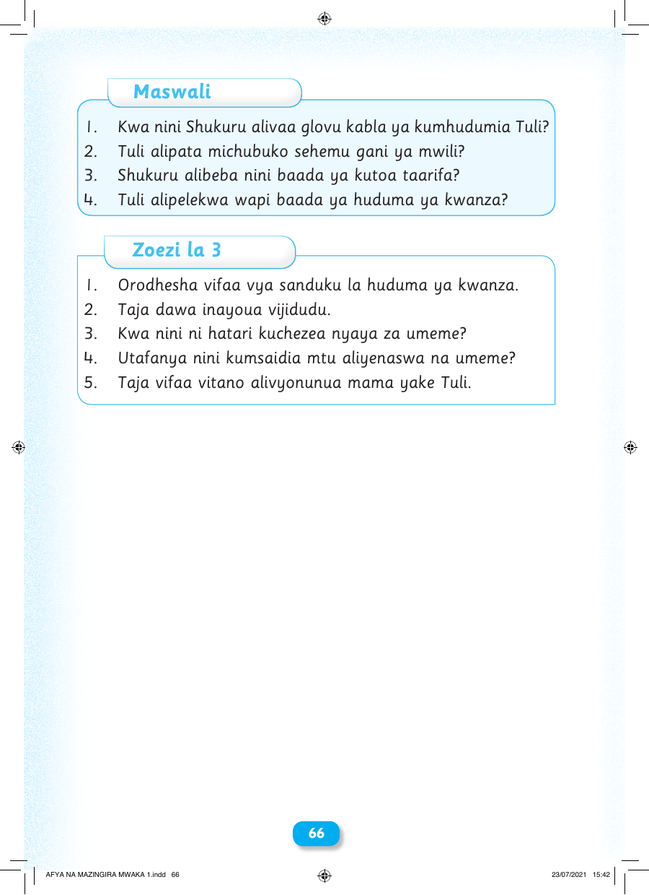

Maswali 1. Kwa nini Shukuru alivaa glovu kabla ya kumhudumia Tuli? 2. Tuli alipata michubuko sehemu gani ya mwili? 3. Shukuru alibeba nini baada ya kutoa taarifa? 4. Tuli alipelekwa wapi baada ya huduma ya kwanza? Zoezi la 3 1. Orodhesha vifaa vya sanduku la huduma ya kwanza. 2. Taja dawa inayoua vijidudu. 3. Kwa nini ni hatari kuchezea nyaya za umeme? 4. Utafanya nini kumsaidia mtu aliyenaswa na umeme? 5. Taja vifaa vitano alivyonunua mama yake Tuli. 66 AFYA NA MAZINGIRA MWAKA 1.indd 66 23/07/2021 15:42